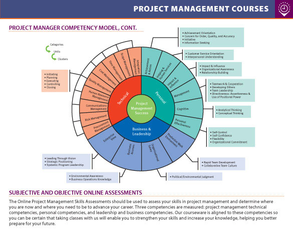
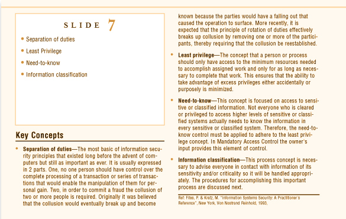
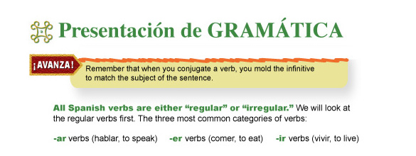

Information About —
Online Academic Assets
  
NEW ONLINE ACADEMIC TOOLS
My research about web in academia
I’ve worked for several years in InDesign, first converting legacy QuarkXPress documents to InDesign and PDF (top image), then publishing InDesign specifically formatted for conversion to XML and XSLT (Houghton Mifflin) (bottom image) and then securing rights and assigning ISBN and EAN numbers to custom print textbooks containing old and new textbook chapters and journal content with professors’ original writing.
INDESIGN SCRIPTING FOR PDF and EPUB
I learned and created modular scripting to edit the PDFs (middle image) to make them consistent for the books. Now the technology for InDesign to ePUB is stable and powerful, and much in demand by the skyrocketing popularity of tablets and online learning in the academic world.